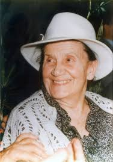
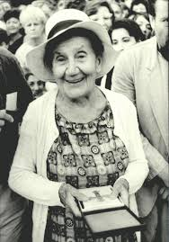
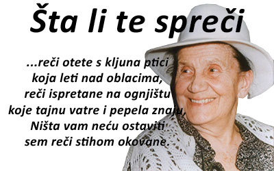
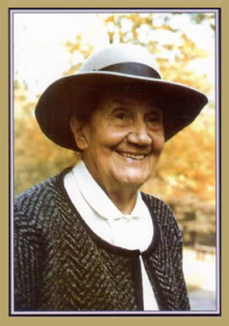
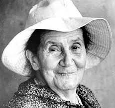
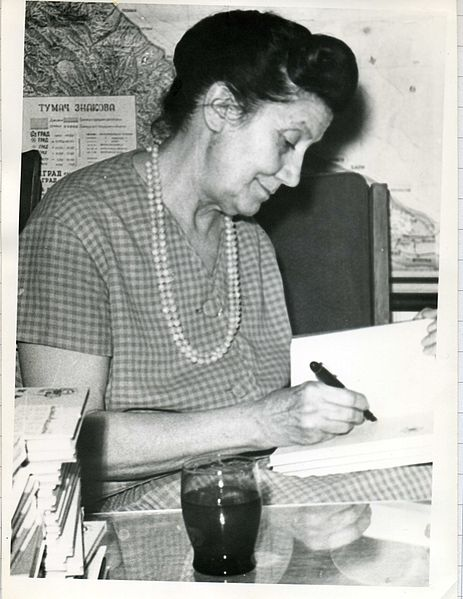

Desanka Maksimović (Rabrovica (Divci) kod Valjeva, 16. maj 1898 — Beograd, 11. februar 1993) je bila srpska pesnikinja, profesorka književnosti i članica Srpske akademije nauka i umetnosti.
Studirala je na odeljenju za svetsku književnost, opštu istoriju i istoriju umetnosti Filozofskog fakulteta u Beogradu. Nakon diplomiranja, Desanka Maksimović je najpre radila u Obrenovačkoj gimnaziji, a zatim kao suplent u Trećoj ženskoj gimnaziji u Beogradu. U Parizu je provela godinu dana na usavršavanju kao stipendista francuske vlade. Nakon što je od 3. septembra 1925. godine radila oko godinu dana u učiteljskoj školi u Dubrovniku, prešla je ponovo u Beograd gde je radila u Prvoj ženskoj realnoj gimnaziji (a današnjoj Petoj beogradskoj gimnaziji). Jedna od njenih učenica bila je i Mira Alečković, koja je takođe postala pesnikinja i bliska prijateljica Desanke Maksimović. Početkom Drugog svetskog rata je otišla u penziju, ali se u službu vratila 1944. i u istoj školi ostala do konačnog penzionisanja, 1953.
Putovala je širom tadašnje Jugoslavije i imala veliki broj prijatelja među piscima i pesnicima; u njih su spadali i Miloš Crnjanski, Ivo Andrić, Gustav Krklec, Isidora Sekulić, Branko Ćopić i mnogi drugi.
Dana 17. decembra 1959. izabrana je za dopisnog člana Srpske akademije nauka i umetnosti, a 16. decembra 1965. za redovnog člana.
U četvrtak, 11. februara 1993. godine, u svojoj 95. godini, u Beogradu je preminula Desanka Maksimović. Sahranjena je u Brankovini kod Valjeva.
Desanka Maksimović je bila pesnik, pripovedač, romansijer, pisac za decu, a povremeno se bavila i prevođenjem, mahom poezije, sa ruskog, slovenačkog, bugarskog i francuskog jezika.
Objavila je oko pedeset knjiga poezije, pesama i proze za decu i omladinu, pripovedačke, romansijerske i putopisne proze. Svoje prve pesme je objavila 1920. godine u časopisu „Misao“.
Njena poezija je i ljubavna i rodoljubiva, i poletna, i mladalačka, i ozbiljna i osećajna. Neke od njenih najpopularnijih pesama su: „Predosećanje“, „Strepnja“, „Prolećna pesma“, „Opomena“, „Na buri“, „Tražim pomilovanje“ i „Pokošena livada“.
Čuvši za streljanje đaka u Kragujevcu 21. oktobra 1941, pesnikinja je napisala jednu od svojih najpoznatijih pesama „Krvava bajka“[1] – pesmu koja svedoči o teroru okupatora nad nedužnim narodom u Drugom svetskom ratu. Pesma je objavljena tek posle rata.
Sanjam da češ doći:
jer mirišu noći, a drveće lista,
i novo se cveće svakog jutra rodi;
jer osmesi ljupki igraju po vodi
i prolećnim nebom što od sreće blista;
jer pupe topole i kao da hoće
k nebu, pune tople, nabujale žudi;
jer u duši bilja ljubav već se budi,
i mirisnim snegom osulo se voće;
jer zbog tebe čežnje u vazduhu plove;
jer priroda sva se za tvoj doček kiti.
Cveće, vode, magle, jablanovi viti,
sve okolo mene čeka te i zove.
Dođi! Snovi moji u gustome roju
tebi lete. Dođi, bez tebe se pati!
Dođi! Sve kraj mene osmeh će ti dati
i u svemu čežnju opazićeš moju.
Poznala sam te kad sneg se topi,
topi, i duva vetar mlak.
Blizina proleća dušu mi opi,
opi, pa žudno udisah zrak.
S nežnošću gledah stopa ti trag,
trag po snegu belom;
i znadoh da ćeš biti mi drag,
drag u životu celom.
Poznala sam te u zvonak dan,
dan pijan, svež i mek.
Činjaše mi se već davno znan,
znan kad te poznadoh tek.
S nežnošću gledah stopa ti trag,
trag po snegu belom;
i znadoh da ćeš biti mi drag,
drag u životu celom.
Poznala sam te kad kopni led,
led, dok se budi proletnji dah;
kad dan je čas rumen, čas setan, bled,
kad sretno se i tužno u isti mah.
S nežnošću gledah stopa ti trag,
trag po snegu belom;
i znadoh da ćeš biti mi drag,
drag u životu celom.
Čuj, reći ću ti svoju tajnu:
ne ostavljaj me nikad samu
kad neko svira.
Mogu mi se učiniti
duboke i meke
oči neke
sasvim obične.
Može mi se učiniti
da tonem u zvuke,
pa ću ruke
svakom pružiti.
Može mi se ućiniti
lepo i lako
voleti kratko
za jedan dan.
Ili mogu kom reći u tome
času čudesno sjajnu
predragu mi tajnu
koliko te volim.
O, ne ostavljaj me nikad samu
kad neko svira.
Učiniće mi se negde u šumi
ponovo sve moje suze teku
kroz samonikle neke česme.
Učiniće mi se crn leptir jedan
po teškoj vodi krilom šara
što nekad neko reći mi ne sme.
Učinice mi se negde kroz tamu
neko peva i gorkim cvetom
u neprebolnu ranu srca dira.
O, ne ostavljaj me nikad samu,
nikad samu,
kad neko svira.